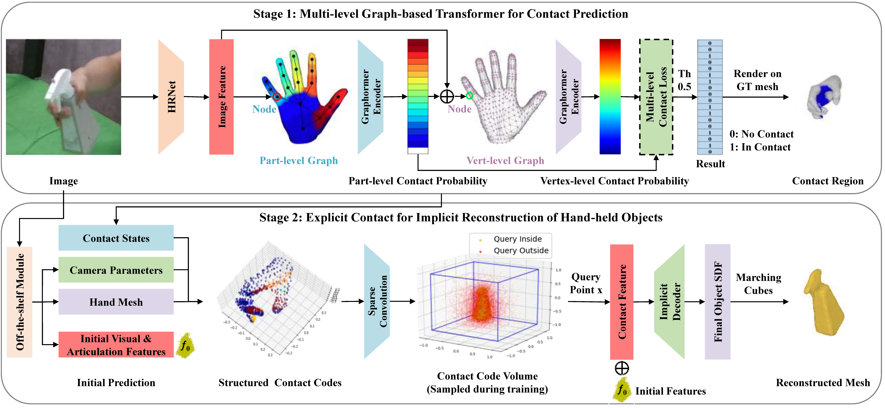

Learning Explicit Contact for Implicit Reconstruction of Hand-held Objects from Monocular Images
AAAI 2024
Junxing Hu1,2, Hongwen Zhang3, Zerui Chen4, Mengcheng Li5, Yunlong Wang2, Yebin Liu5, Zhenan Sun1,2
1University of Chinese Academy of Sciences, 2CASIA, 3Beijing Normal University, 4Inria, 5Tsinghua University
Abstract
Reconstructing hand-held objects from monocular RGB images is an appealing yet challenging task. In this task, contacts between hands and objects provide important cues for recovering the 3D geometry of the hand-held objects. Though recent works have employed implicit functions to achieve impressive progress, they ignore formulating contacts in their frameworks, which results in producing less realistic object meshes. In this work, we explore how to model contacts in an explicit way to benefit the implicit reconstruction of hand-held objects. The proposed method CHOI consists of two components: explicit contact prediction and implicit shape reconstruction. In the first part, we propose a new subtask of directly estimating 3D hand-object contacts from a single image. The part-level and vertex-level graph-based transformers are cascaded and jointly learned in a coarse-to-fine manner for more accurate contact probabilities. In the second part, we introduce a novel method to diffuse estimated contact states from the hand mesh surface to nearby 3D space and leverage diffused contact probabilities to construct the implicit neural representation for the manipulated object. Benefiting from estimating the interaction patterns between the hand and the object, CHOI can reconstruct more realistic object meshes, especially for object parts that are in contact with hands. Extensive experiments on challenging benchmarks show that the proposed method outperforms the current state of the arts by a great margin.
[Paper] [Code]

Fig 1. The overview of learning explicit contact for implicit reconstruction. In the first stage, the method estimates contact regions of the hand given a monocular RGB image. Based on the template MANO mesh, part- and vertex-level graph-based transformers are constructed and cascaded together for accurate predictions. In the second stage, the estimated contact is used to construct the implicit neural representation. An off-the-shelf module is first utilized to produce the camera parameters, hand mesh, and initial features from the image. Then, the structured contact codes are generated by anchoring contact probabilities to the hand mesh surface. After sparse convolutions, the contact states on the hand surface are diffused to its nearby 3D space, which facilitates the perception and reconstruction of the manipulated object.
Results

Fig 2. Contact prediction on HO3D (Rows 1-5) and OakInk (Rows 6-10) datasets. The ground truth area is green, the single part or vertex-level prediction is red, and the multi-level estimation corresponds to blue. For the sample whose contact regions are occluded by hands, the hand mesh is rotated 90 or 180 degrees for clear visualization. Compared with the single-level structure, the proposed multi-level method is robust to complex hand poses and occlusions from hands or objects.

Fig 3. Qualitative comparison with the state-of-the-art method on object reconstruction on OakInk (Rows 1-5) and HO3D (Rows 6-10) datasets. Our method can reconstruct more realistic objects, especially for parts that are in contact with hands.
Fig 4. Video results. The objects are unseen during training. The results are reconstructed frame-by-frame without post-processing.
Technical Paper
BibTeX
@InProceedings{hu2024learning,
title = {Learning Explicit Contact for Implicit Reconstruction of Hand-held Objects from Monocular Images},
author = {Hu, Junxing and Zhang, Hongwen and Chen, Zerui and Li, Mengcheng and Wang, Yunlong and Liu, Yebin and Sun, Zhenan},
booktitle = {Proceedings of the AAAI Conference on Artificial Intelligence},
year = {2024},
}